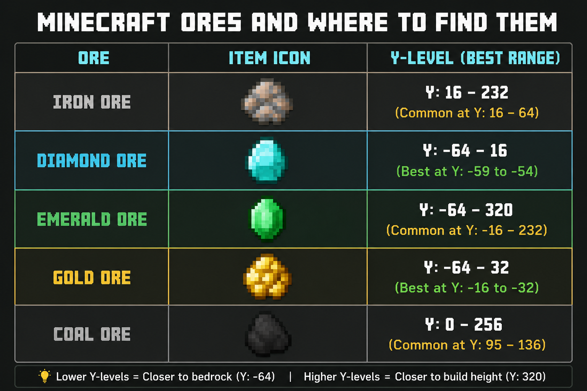

The image above shows the best Y-levels for finding important Minecraft ores. Knowing where ores generate can save a lot of mining time.
Coal: Coal is one of the most common ores. It is used for torches and fuel. You can find it easily in caves and mountain areas.
Iron: Iron is needed for armor, tools, shields, buckets, and many other useful items. It is commonly found underground and in caves.
Gold: Gold is useful for golden apples and Piglin trading. It is especially common in Badlands biomes.
Emerald: Emeralds are mainly found in mountain biomes. They are used for trading with villagers.
Diamond: Diamonds are among the most valuable ores in Minecraft. For the best chance of finding diamonds, mine deep underground around Y-Level -58 and explore large caves carefully.
Always carry torches, food, and extra tools while mining. This will help you stay safe and collect more resources during long mining trips.
🏠 Home